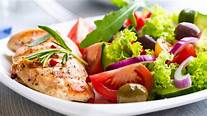

.jpg)
.jpeg)
| Frutas y verduras | Carnes y huevos | Leche, yogur y quesos | Legumbres, cereales, papas y pastas | Aceites, frutas secas y semillas |
|---|---|---|---|---|
| Aportan una gran variedad de vitaminas y minerales, fitoquímicos, antioxidantes, y constituyen la principal fuente de fibra de la alimentación. | Suministran proteína de alto valor biológico, que en general es un buen complemento de los alimentos vegetales con un contenido limitado de aminoácidos. | Son una importante fuente de proteínas de alto valor biológico (caseína, lactoalbúminas y lactoglobulinas), vitaminas A, D, B2 y B12 y minerales (calcio, fósforo y magnesio). | Son una excelente fuente de proteínas vegetales, contienen fibra, minerales, vitaminas esenciales y antioxidantes. La combinación de cereales y legumbres proporciona aminoácidos que nuestro cuerpo necesita. | Tienen principalmente grasas insaturadas y no tienen colesterol. Son la fuente de energía más concentrada. Los aceites crudos aportan grasas saludables, antioxidantes y vitaminas. Las semillas y frutas secas aportan además, proteínas, minerales y fibra. |
| Categoría | Descripción |
|---|---|
| Frutas y Verduras | Las frutas y las verduras son indispensables para preparar comidas saludables, ya que son una de las mejores fuentes de fibra, vitaminas, minerales y antioxidantes. Puedes incorporarlas en batidos, ensaladas, postres, sopas, guisos y guarniciones. |
| Granos Enteros | Los granos enteros son una mejor opción que los granos refinados. Puedes incorporar ingredientes como quinoa y trigo sarraceno en ensaladas, agregar salvado de trigo a preparaciones de panadería y hacer snacks saludables utilizando granos enteros. |
| Proteínas Magras | Las proteínas magras, como pescado, pollo, pavo, cerdo y cortes magros de carne de res, son esenciales para el mantenimiento y desarrollo de los tejidos musculares. Planifica almuerzos saludables utilizando estas fuentes de proteínas. |
| Grasas Saludables | Reduce el consumo de grasas saturadas y trans utilizando ingredientes como aguacate, aceite de oliva y aceite de coco en tus recetas. También puedes incorporar frutos secos y semillas como chía o girasol en ensaladas, yogures o batidos. |
Algunos alimentos ricos en grasas saludables incluyen nueces, almendras, huevos y aguacate.
| Categoría | Descripción |
|---|---|
| Alimentos Procesados | Los alimentos procesados contienen aditivos, conservantes y diferentes tipos de ingredientes artificiales que pueden ser perjudiciales para la salud. Bebidas azucaradas, carnes procesadas, dulces y comidas congeladas son bajas en nutrientes y aumentan el riesgo de enfermedades cardiacas y crónicas. |
| Harinas Refinadas | El proceso de refinamiento de cereales elimina nutrientes. Evita harinas refinadas y opta por alternativas más saludables como harinas integrales, harinas de legumbres (garbanzos, coco, almendras, avena, entre otras). |
| Azúcares Añadidos | Los alimentos con azúcares añadidos aportan calorías vacías y pueden contribuir al desarrollo de enfermedades. Evita productos como salsas, bebidas gaseosas, barras de chocolate y galletas industriales. |
| Alto Contenido en Sodio | Evita alimentos con alto contenido en sodio, como embutidos y sopas enlatadas, que pueden generar retención de líquidos y aumentar el riesgo de enfermedades crónicas. Revisa las etiquetas y opta por alimentos frescos y naturales. |
Antes de comprar cualquier producto, es fundamental que revises la etiqueta para verificar la cantidad de sodio que contienen. Además, es recomendable reemplazarlos por alimentos frescos y naturales.
La planificación es un elemento indispensable si quieres cambiar tu estilo de vida y empezar a preparar comidas sanas. Es muy difícil cambiar hábitos de un día para otro, y se necesita de mucha organización y disciplina para lograrlo.
En este sentido, lo mejor que puedes hacer es diseñar un menú semanal en el que incluyas platos que cubran tus necesidades nutricionales. Asimismo, debes enfocarte en variar los ingredientes y las preparaciones, para que el proceso te resulte más sencillo y te puedas adaptar a la nueva dieta en menos tiempo.
Otra opción que puedes considerar es escribir una lista de compra, para evitar los alimentos que te hacen daño y concentrarte exclusivamente en los que se ajustan a tu plan de alimentación saludable.
En caso de que tengas una vida muy ocupada y te resulte difícil invertir tiempo en preparar comidas sanas, puedes tomar un día para cocinar grandes cantidades de alimentos y almacenarlas en recipientes individuales. De esta manera podrás tener comida para toda la semana e invertir menos tiempo en cocinar.
| Ensalada de Habichuela | Ensalada con Brocoli | Ensalada de Espinacas |
|---|---|---|
|
 | |